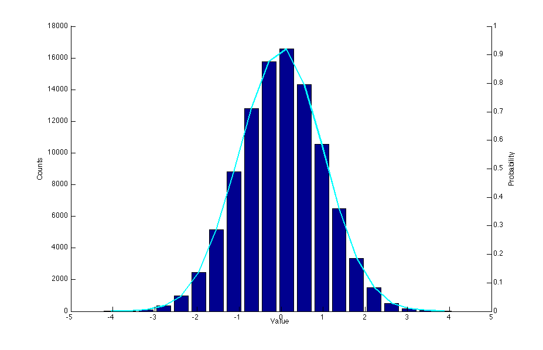

MATLAB Tips and Tricks
Plotting On Top of a Bar Graph with Separate Axes
This is only somewhat convoluted. The following code will produce a histogram of some samples drawn from a Gaussian distribution, along with a line graph of the probabilities. Since the counts will be large numbers, and the probabilities will all be less than 1, we need multiple y-axes.
nbins = 20;
samples = randn(100000,1);
[n, xout] = hist(samples, nbins);
bar(xout, n);
hold on;
plot(xout, n, 'c', 'LineWidth', 2)
% get the currrent axis
ax1 = gca;
% create a second axis
ax2 = axes('Position', get(ax1, 'Position'));
% set the location of ax2's y axis to the right,
% with no color, and remove the x ticks
set(ax2, 'YAxisLocation', 'right', 'Color', 'none', 'XTickLabel', [])
% this will get rid of the ticks from ax1 on the right of the plot
set(ax1, 'box', 'off')
xlabel('Value')
ylabel(ax1, 'Counts')
ylabel(ax2, 'Probability')
